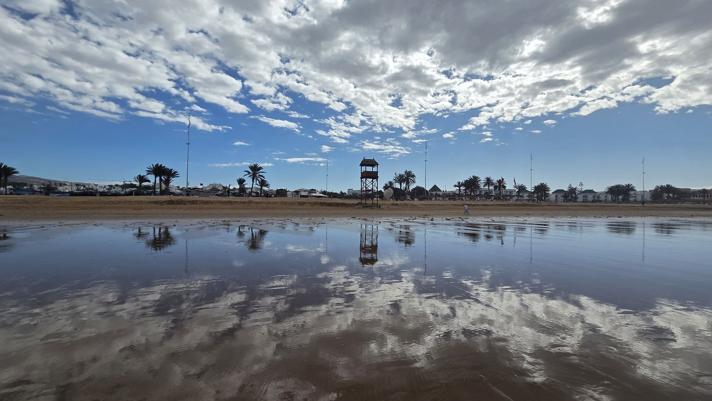
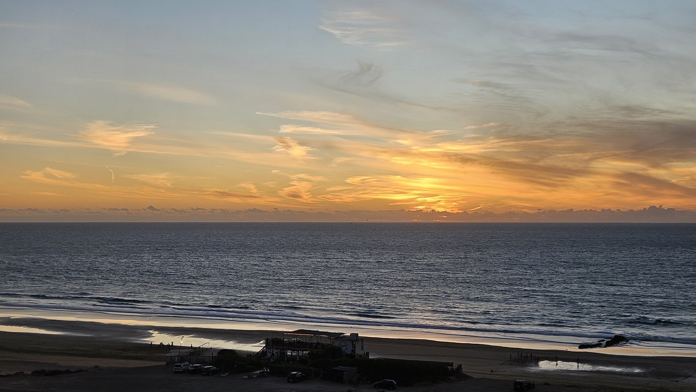
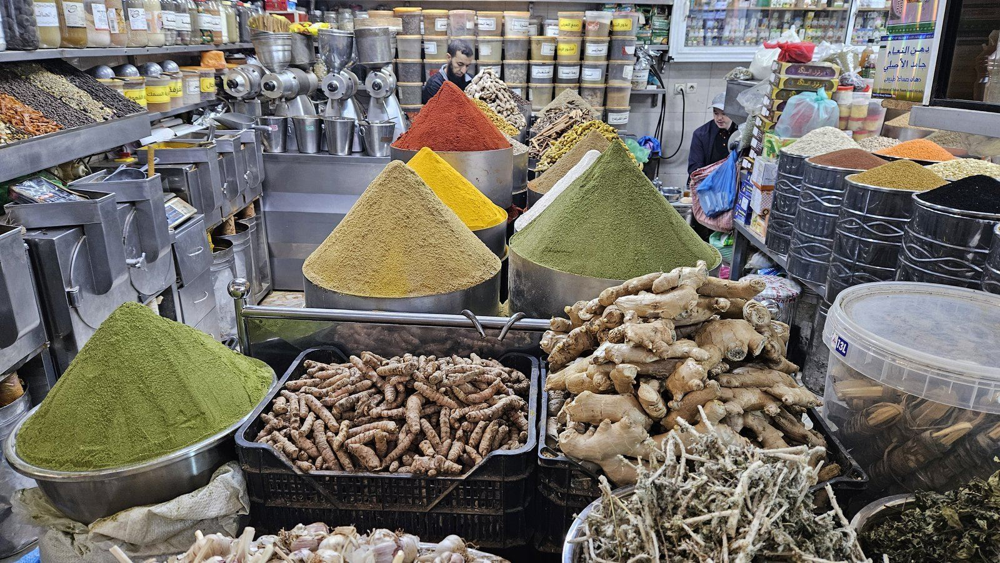
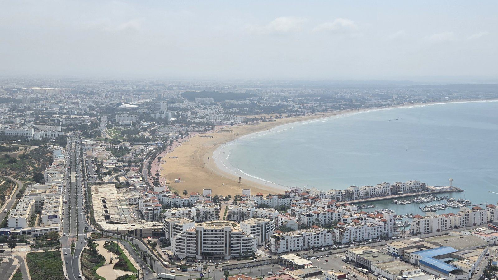
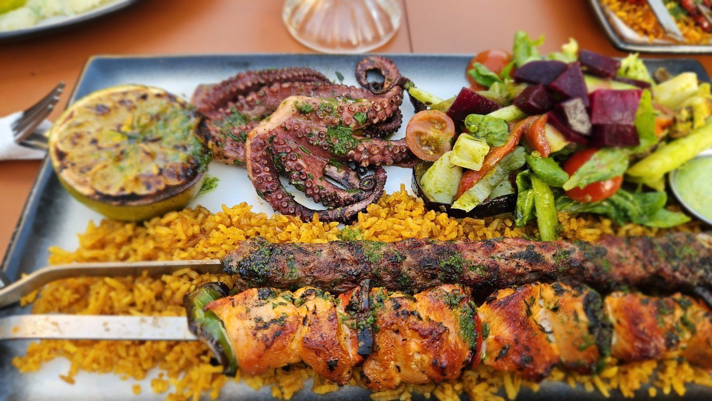

Z cest
Agadir na prodloužený víkend: pláž, súk a Kasbah nad zátokou
Destinace a úvod
Agadir je pro mě jistota, když chci na pár dní k moři a nechci utrácet. Má velkou, dlouhou písečnou pláž, dobré ceny za všechno a obrovský súk, kde se dá i levně najíst.
Byl jsem tu 9.–13. 12. 2024, 27.–31. 10. 2025 a 23.–28. 3. 2026. Na listopad 2026 už mám další cestu.

Minusů moc není. Je to levná destinace s pěknou pláží, jen počítejte s tím, že tu často dost fouká.
Letenka
Létám z Vídně. V prosinci 2024 stála letenka 1 000 Kč (2024), v březnu 2026 2 400 Kč na osobu (2026) – tam Ryanair, zpátky Lauda.
V říjnu 2025 jsme letěli taky z Vídně, letenka stála kolem 1 800 Kč (2025).
Tip pro ty, kdo mají víc času: Agadir se dá spojit s Kanárskými ostrovy, Ryanair tam z Agadiru létá pravidelně, klidně kolem 1 000 Kč (2026). Nebo přiletět do Agadiru, autobusem pokračovat do Marrákeše a domů letět odtamtud – Ryanair umí multicity letenky v rámci jedné země.
K letu z Vídně počítejte i s cestou na letiště. V březnu 2026 nás parkování u letiště ve Vídni vyšlo na 100 EUR (2 400 Kč) a dálniční známka na 13 EUR, rozpočítané to dělalo zhruba 900 Kč na osobu (2026).
Salonky
Na letišti v Agadiru je salonek, do kterého chodím s LoungeKey. Alkohol tu není a občerstvení je spíš ve stylu tapas, ale chodím tam pokaždé znovu – hlavně proto, že je hned vedle gatů.
Ubytování
Vyzkoušel jsem tři varianty a nejlépe mi vychází okolí Mariny: hlídaný areál, moderní apartmány a hned u pláže. Tam jsme bydleli v říjnu 2025, apartmán s balkonem do palem a bazénem v resortu.
V prosinci 2024 jsem bydlel kousek od hlavního tržiště. Bylo to hodně levné, kolem 500 Kč za noc na osobu (2024), ale šlo o typický marocký byt, dost obyčejný.
V březnu 2026 jsme měli přes Airbnb velký byt – 3 ložnice a 2 koupelny, kousek od velkého supermarketu. Celkem asi 10 000 Kč za všechny (2026). Byl dost daleko od vody, ale taxi k pláži stálo do stovky.
Místní doprava
Z letiště jezdím taxíkem objednaným přes Booking. Většinou vyjde levněji než taxi, které čeká u letiště. V březnu 2026 nás vyšlo zhruba na 1 100 Kč (2026).
Po městě taxi. Je levné, k pláži nebo do centra do 100 Kč (2026).
Na Kasbah doporučuji lanovku z údolí. Výhled na záliv, přístav a město je fakt krásný. Nahoru se dá vyjet i taxíkem po silnici.
Program po dnech
Nejde o jednu cestu, ale o místa, kam se v Agadiru vracím.
Pláž a promenáda
Trasa: Marina Agadir – pláž – promenáda
Pláž je velká, dlouhá a písečná. Lehátko se slunečníkem stojí kolem 3 EUR (2026). Podél pláže vede promenáda s palmami, kavárnami a restauracemi, večer se tu chodí na západ slunce nad Atlantikem. Při odlivu se na mokrém písku zrcadlí mraky i strážní věže plavčíků.

Souk El Had
Trasa: Marina Agadir – Souk El Had
Súk je obrovský. Pyramidy koření, datle, olivy, ovoce, zelenina i hliněné tajiny. Dá se tu dobře najíst – hutná polévka za zhruba 8 Kč (2026) a k tomu výborný fresh z granátových jablek.

Kasbah Agadir Oufella a lanovka
Trasa: Médina Polizzi – lanovka – Kasbah Agadir Oufella
Na kopci nad městem je obnovená Kasbah s hradbami a na svahu velký nápis „Allah – Al Watan – Al Malik“, večer osvětlený. Nahoru jsme v březnu 2026 jeli lanovkou z údolí. Shora je vidět celá zátoka, pláž, marina, přístav i město.

Médina Polizzi
Médina Polizzi je novodobá replika tradiční mediny – brány, dvory s mozaikami, oblouky a dílny řemeslníků. Byl jsem tu na všech třech cestách, v březnu 2026 i s mamkou a Pavlou před jízdou lanovkou.
Okružní výlet na jih (prosinec 2024)
Trasa: Agadir – Souss-Massa – Tiznit
Při první návštěvě jsem si přes Booking objednal celodenní okružní jízdu. Jeepem na duny, oběd u Berberů, přehrada a další zastávky. Cestou jsme viděli plameňáky v ústí řeky, divoké útesy s příbojem a dromedáry.
Paradise Valley – raději ne
Trasa: Agadir – Paradise Valley
Další půlden jsem jel do Paradise Valley. Bylo to hrozné. Tak turisticky zkazit kdysi asi krásné místo je zločin.
Kde jsem jedl
Ma Poêle Smoke House, Agadir – byl jsem tu několikrát, výborná chobotnice.

Jinak chodím do restaurací podél pláže a do súku.
Alkohol: v restauracích u pláže je pivo běžně, jakmile jdete víc do města, pivo už nemají. Zato tam mají výborné fresh džusy. Jinak se alkohol dá koupit ve specializovaných prodejnách.
Náklady
| Položka | Kdy | Částka |
|---|---|---|
| Letenka Vídeň – Agadir | 2024 | 1 000 Kč |
| Letenka Vídeň – Agadir | 2025 | cca 1 800 Kč |
| Letenka Vídeň – Agadir | 2026 | 2 400 Kč/os |
| Byt u tržiště, noc na osobu | 2024 | cca 500 Kč |
| Byt přes Airbnb, 5 nocí celkem | 2026 | cca 10 000 Kč |
| Taxi z letiště přes Booking | 2026 | cca 1 100 Kč |
| Taxi po městě | 2026 | do 100 Kč |
| Lehátko a slunečník | 2026 | cca 3 EUR |
| Polévka v súku | 2026 | cca 8 Kč |
| Parkování u letiště Vídeň | 2026 | 100 EUR |
| Salonek na letišti | 2024–2026 | v rámci LoungeKey |
Postřehy
Ubytování hledejte kolem Mariny, je hlídaná a hned u pláže.
Taxi z letiště objednávejte přes Booking, vyjde levněji.
Pivo seženete u pláže, ve městě spíš fresh džus.
Lanovka na Kasbah se vyplatí kvůli výhledu.
Často dost fouká.
Co bych udělal jinak
Do Paradise Valley bych už nejel.